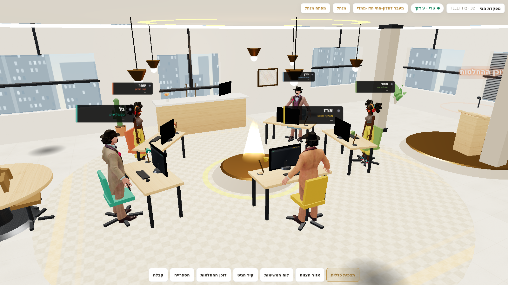
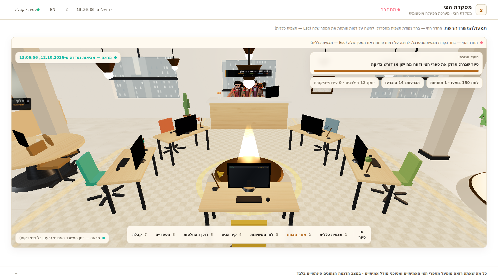
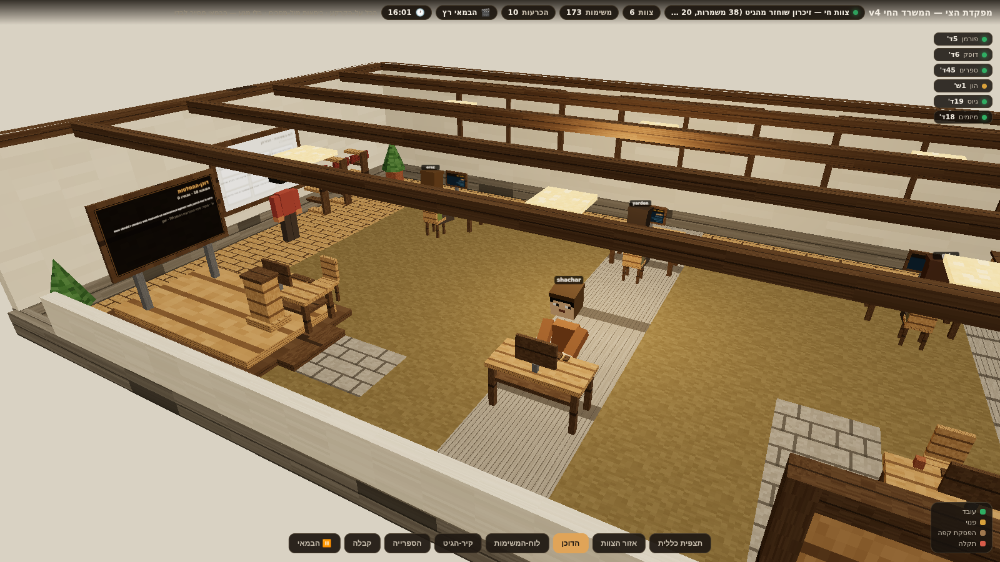
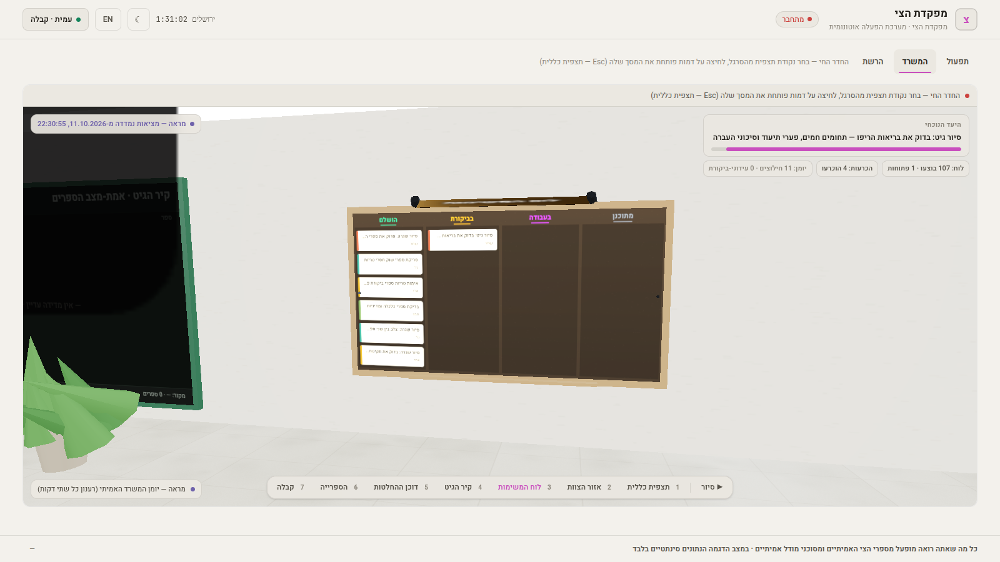
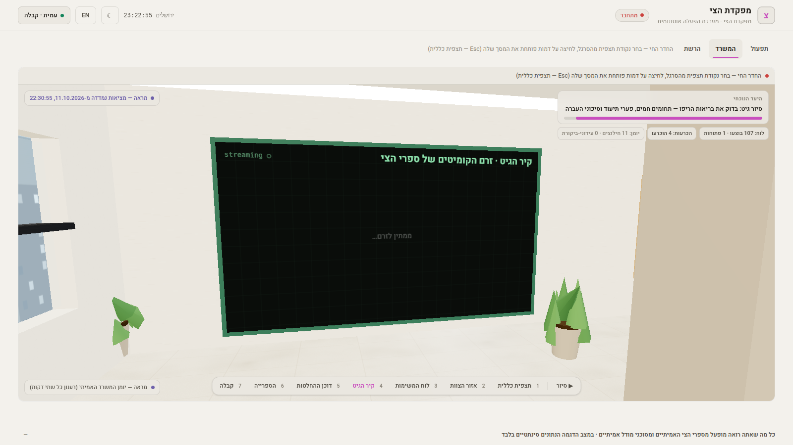
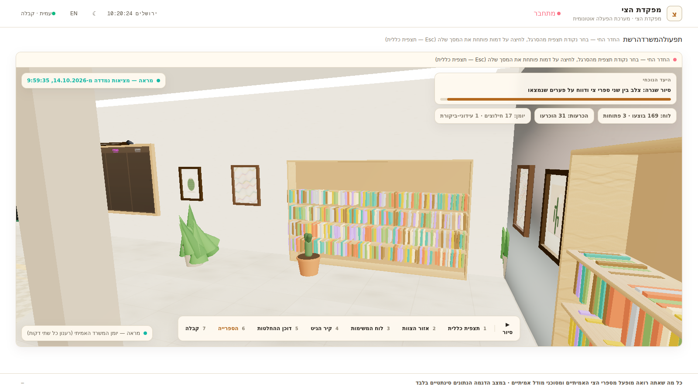

משרד סוכנים אוטונומי שחי בגיט: ראש-מטה מתכנן, חמישה עובדים מבצעים מול ספרי-נתונים אמיתיים, וכל צעד נרשם כקבלה. הדף הזה הוא חלון-הראווה של המשרד — נבנה אוטומטית מהקבצים עצמם, בלי ממשק-שליטה ובלי מספרים מומצאים.
החדר החי v4: הכל על-הקרקע, כיסאות פונים למסכים, ובמוי-קולנועי — הצוות בעבודתו מול הנתונים האמיתיים: לוח-המשימות, קיר-הגיט והספרייה.






| ריפו | נראות | ריצת-Actions אחרונה | קומיטים · 7 ימים | דחיפה אחרונה |
|---|---|---|---|---|
| Domain | ציבורי | בריצה pages build and deployment 2026-10-18 17:11 UTC · לפני פחות מדקה |
100+ | 2026-10-18 17:10 UTC |
| FleetHQ | ציבורי | בריצה office-window 2026-10-18 17:11 UTC · לפני פחות מדקה |
100+ | 2026-10-18 17:10 UTC |
| Autonomy | ציבורי | הצלחה contract-check 2026-10-18 17:10 UTC · לפני פחות מדקה |
100+ | 2026-10-18 17:10 UTC |
| saos-runtime | ציבורי | בריצה dex-beat 2026-10-18 16:54 UTC · לפני 17 דק׳ |
100+ | 2026-10-18 17:10 UTC |
| giant | ציבורי | הצלחה trust-heartbeat 2026-10-18 17:01 UTC · לפני 10 דק׳ |
100+ | 2026-10-18 17:01 UTC |
| sovereign-lighthouse | ציבורי | הצלחה lighthouse-pulse 2026-10-18 16:55 UTC · לפני 16 דק׳ |
100+ | 2026-10-18 16:55 UTC |
| saos-dex | ציבורי | בתור-ריצה hive-heartbeat 2026-10-18 16:31 UTC · לפני 39 דק׳ |
100+ | 2026-10-18 16:54 UTC |
| sovereign-runner-kit | ציבורי | הצלחה netrun-loop 2026-10-18 16:51 UTC · לפני 20 דק׳ |
64 | 2026-10-18 16:51 UTC |
| sovereign-executor | ציבורי | בריצה fleet-beat 2026-10-18 16:36 UTC · לפני 35 דק׳ |
13 | 2026-10-18 16:36 UTC |
| Console | ציבורי | הצלחה pages build and deployment 2026-10-18 16:34 UTC · לפני 36 דק׳ |
100+ | 2026-10-18 16:34 UTC |
| sovereign-beacon | ציבורי | הצלחה beacon-pulse 2026-10-18 16:30 UTC · לפני 41 דק׳ |
96 | 2026-10-18 16:30 UTC |
| GridWatch | ציבורי | הצלחה identity-guard 2026-10-18 16:02 UTC · לפני 1 שע׳ |
100+ | 2026-10-18 16:02 UTC |
| Pulse | ציבורי | הצלחה pages build and deployment 2026-10-18 06:30 UTC · לפני 10 שע׳ |
100+ | 2026-10-18 06:30 UTC |
| ops-forge | ציבורי | הצלחה forge 2026-10-17 00:16 UTC · לפני 1 ימים |
100+ | 2026-10-17 00:17 UTC |
| ops-intake | ציבורי | הצלחה intake 2026-10-17 00:10 UTC · לפני 1 ימים |
100+ | 2026-10-17 00:12 UTC |
| roshpinacare-sys.github.io | ציבורי | הצלחה pages build and deployment 2026-10-14 20:07 UTC · לפני 3 ימים |
22 | 2026-10-14 20:07 UTC |
| ריפואים-פרטיים: לא-ידוע — שמותיהם אינם נמנים ציבורית (מדיניות-חשיפה 7-b) | ||||
ARMED-WAITING HIVE: ARMED-WAITING
כל מספר בדף הזה נמדד בזמן-הבנייה מקובץ אמיתי: מצב-המשרד מגיע מהפורמן עצמו (office-state-mirror.json), מצב-הצי נאסף מ-API של גיטהאב ומקבלות-גריד ציבוריות. אפשר לפתוח כל מקור ולהשוות.
חוק-הכנות של המשרד: אדום נשאר אדום עד שנמדד ירוק, וכשל מוצג ככשל. כשמשהו לא נמדד — הדף כותב לא נמדד, לעולם לא מסומן כתקין. גם הסוכנים עצמם מנועים מלדווח על מה שלא קראו.
הסוקט והדף קריא-בלבד: אין קונסולת-מטרות, אין מענה-להכרעות, אין נתיב-כתיבה ציבורי. המשרד מתופעל על-ידי המפעיל האוטונומי ומכריע שאלות-שיקול-דעת לפי מדיניות מפורסמת — המבקר רואה הכל ואינו יכול להטות דבר.
הצוות סורק את ספרי-הצי בפטרולים אוטונומיים, חוצה ספרים זה-מול-זה, מדווח פערים וכותב דוחות לספרייה. הדף הזה עצמו נבנה ומתפרסם על-ידי המשרד (workflow יומי) — המשרד הוא גם המהנדס של חלונו.